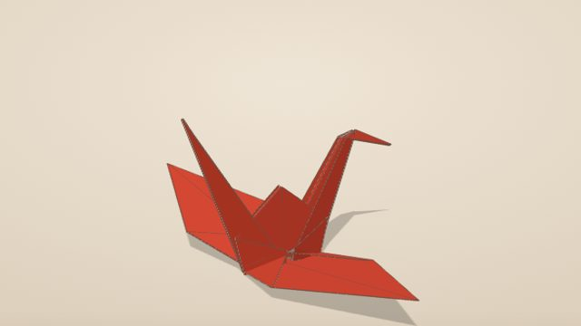
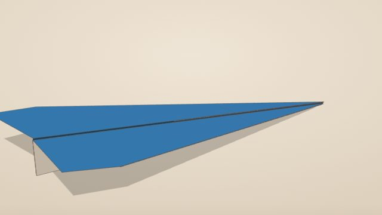
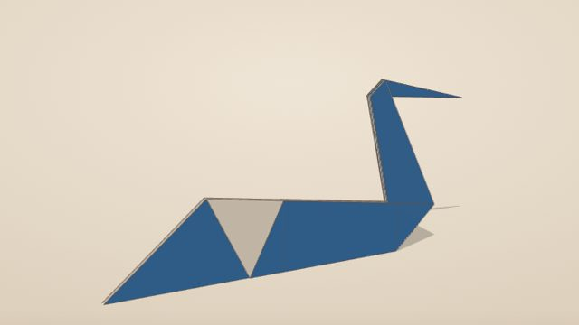
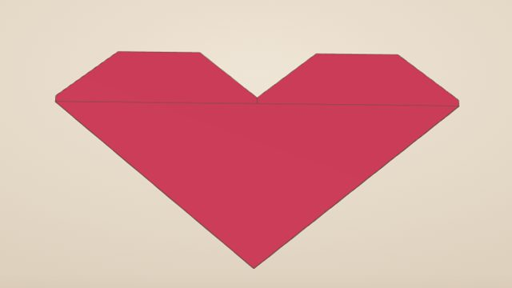
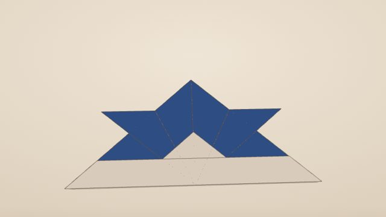
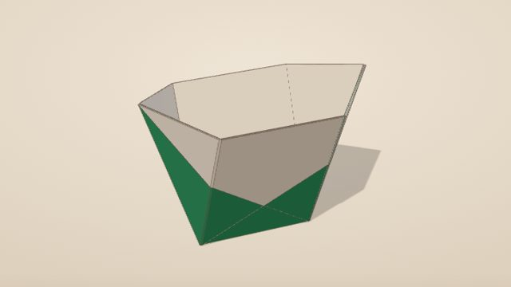

Watch one sheet of paper fold, step by step, into six models. Press play, drag the slider, or spin the model round with your finger.

The classic. Bird base, petal folds, reverse folds for the neck and tail.
Watch 16 steps
The dart everyone knows, with level wings and a keel to hold.
Watch 11 steps
A kite base that turns into a long neck, a head and a tail.
Watch 12 steps
The quickest one here. A good first fold.
Watch 6 steps
The kabuto, with two horns and a folded brim.
Watch 9 steps
Fold it flat, then push the mouth open into a cup.
Watch 8 steps